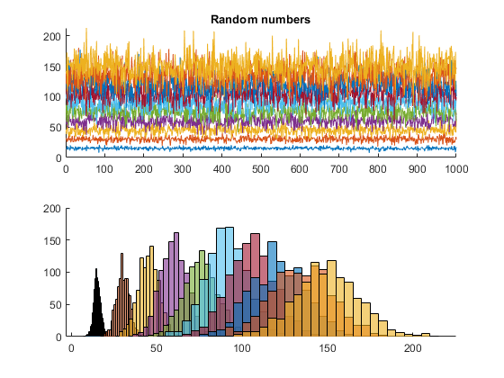

%Assignment : Assignment 6 part two %Description A program that will set up a vector of a 10x1000 and create 10 %random standard variations. Then inputing a random distribution formula %and graphing it. %Author : Robert J. Foster %Date : October 4th, 2019 %Resources : Matlab for Engineers Book, www.mathworks.com/help %Commenting Style C doxygen : http://www.doxygen.nl/manual/docblocks.html %Setting up the figure, adding a window title, taking numbers off, putting %in midle of screen, pausing for .1 to allow for setup, without it jerking %all around the screen f = figure('Name','Random Numbers','NumberTitle','off'); movegui(f,'center'); pause(.1) %Setting up the variables 'rd = random, counter = applied %throughout,countLoop the looping mechanism rD = ones(10,1000); counter = 1; countLoop = 2:2:20; %Setting up the plots on the figure. rP(1) = subplot(2,1,1); rP(2) = subplot(2,1,2); title(rP(1), 'Random numbers') set(rP,'Nextplot','add') %While loop instead of two for loops to speed up processing. Countloop %checking 10 numbers, rD = meat and potatoes, plotting 10 times on plot and %histogram, adding +1 to counter to go to the next. while (counter ~= 11) for countLoop = 2:2:20 rD(counter,:) = countLoop * randn(1,1000) + 7.5 * countLoop; plot(rP(1), rD(counter,:)) histogram(rP(2), rD(counter,:)) counter = counter + 1; end saveas(gcf, 'Random_Numbers', 'jpg'); % Finally saving the figure end